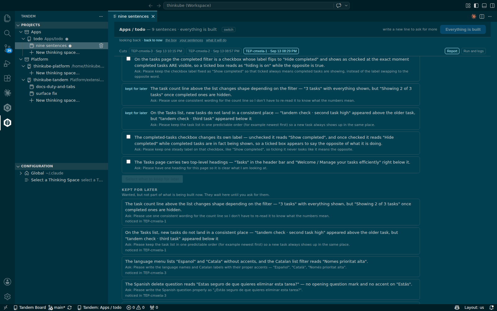
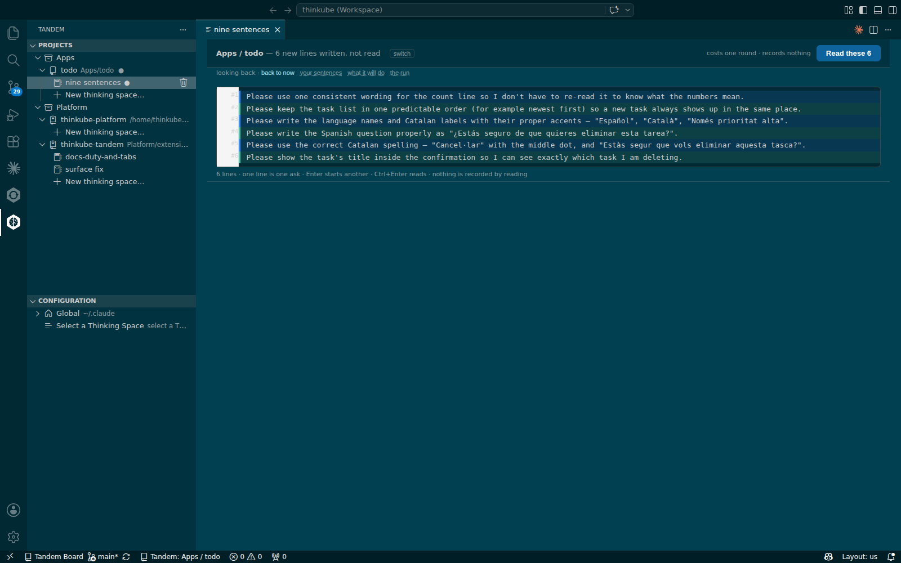
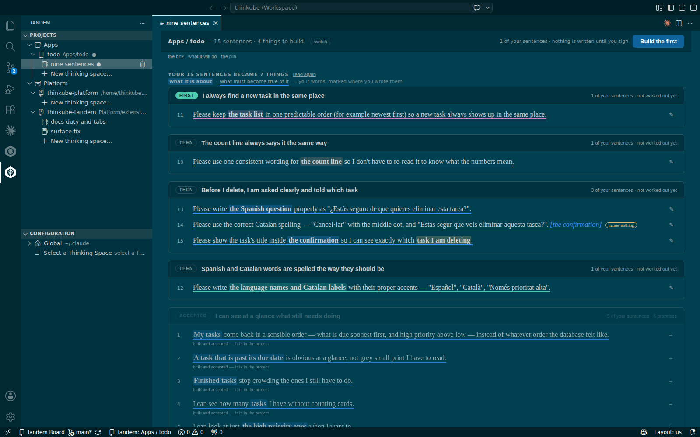

Build the improvements Tandem’s reviewers suggest
Overview
Basic idea
A reviewer judging the running product asks one question about each thing it sees that nobody asked for: does this stop the work being delivered? If it does, the work fixes it. If it does not, it becomes a finding, and the delivery goes ahead.
-
Findings never block. They are listed under What the work noticed, and did not do, each with the sentence a person would say to want it fixed.
-
Keeping is not building. You keep the findings you want for later, so the things you chose to build first keep their place.
-
Kept findings become sentences. One press puts them all in the box, where they are read, kept and grouped like any sentence you write.
-
Built work stays built. Grouping the new sentences leaves the accepted things as they are.
What you’ll accomplish
You keep six findings from two reports of the todo app, turn them into six sentences, group them into new things beside the three already built, and build the first.
What to know before starting
Required
-
Build your first application change with Tandem: a space with at least one delivered thing.
Optional
-
Reading the report and deciding: every section of the report.
Supported hardware
| Node | Architecture | GPU | On the reference walk |
|---|---|---|---|
tkamd1 |
amd64 |
none |
Thinkube IDE, where Tandem and its workers run |
tkamd2 |
amd64 |
2 × RTX 3090, 24 GB each |
— |
tkspark |
arm64 |
GB10, 121.7 GB unified |
— |
Prerequisites
Platform
-
Thinkube running, with Thinkube IDE open. Ask Claude: "what’s running?"
-
A thinking space with a delivered thing whose report lists findings.
Components
-
None beyond the base platform.
Time & risk
-
Estimated time: 30 min for one sentence. On the reference walk: keeping six findings and putting them in the box 2 min, reading and keeping them 2 min, grouping 1 min, working out the first thing 7 min, and its run 17 min.
-
Risk level: Low. The new things are built like any other, on a branch merged at delivery; the accepted things are not built again.
-
Rollback: On the new thing’s report, press Take it back out.
-
Last updated: 2026-09-17. Written from the walk of 2026-09-14 on the todo app, Tandem 2.0.343 to 2.0.345.
Instructions
Step 1. Read what the work noticed
Open a delivered thing’s report and scroll to What the work noticed, and did not do. Each finding has a box to tick, what was seen, and under it Ask: followed by the sentence to want it fixed.
On the walk, the third report listed missing accents in the language menu, the Spanish delete question, the Catalan confirmation, and a delete confirmation that does not name the task. The first report listed the count line changing shape and new tasks landing in no fixed place.
Step 2. Keep the ones you want
Tick the findings you want. The button under the list changes from Select what to keep for later to Keep the N selected for later. Press it.
Each finding now reads kept for later where it stands, and a section Kept for later appears under the report, naming the cut that noticed each one. It gathers what you kept from every report of the space: on the walk, four from the third report and two from the first, listed together.

Step 3. Put them in the box
Under Kept for later, press Put these 6 in the box. Each finding reads ✓ in the box on its report, the strip says 6 new lines written, not read · Read these 6, and the box holds the six drafted asks, one per line.

The asks are in the reviewer’s words and begin with "Please …". Change them in the box before you read if you want them in yours; the machine reads both the same way.
Step 4. Read, keep and group the rest
Press Read these 6, then Keep these 6: the lines become sentences 10 to 15. The strip then offers Group the rest.
Press Group the rest. Only the new sentences get things; the accepted things stay as they are.

On the walk the six sentences became four new things, carrying sentences 11; 10; 13, 14 and 15; and 12. The strip said 15 sentences · 4 things to build.
Step 5. Build the first
Press Build the first, then Build these N on the work page, as in Build your first application change with Tandem. The run builds the thing, deploys it and reports.
On the walk the first new thing was sentence 11, "keep the task list in one predictable order". It took 7 min to work out and 17 min to run, and ended delivered with 8 checks passed and the reviewer on the running product green. After Go on to the next, the strip said 15 sentences · 3 things to build.
Step 6. Next steps
-
Reading the report and deciding: Go on to the next, Take it back out and Run it again.
-
The defect ledger: what the runs caught and repaired.
-
Build your first application change with Tandem: the full path of one thing.
Troubleshooting
| Symptom | Cause | Fix |
|---|---|---|
A report lists the same finding several times, each with its own ask |
Several reviewers saw the same thing, and each finding is listed as its reviewer wrote it |
Keep one of them. |
In a freshly opened window, the first click on a space in Projects opens nothing |
The extension is still starting |
Click again after a few seconds. |